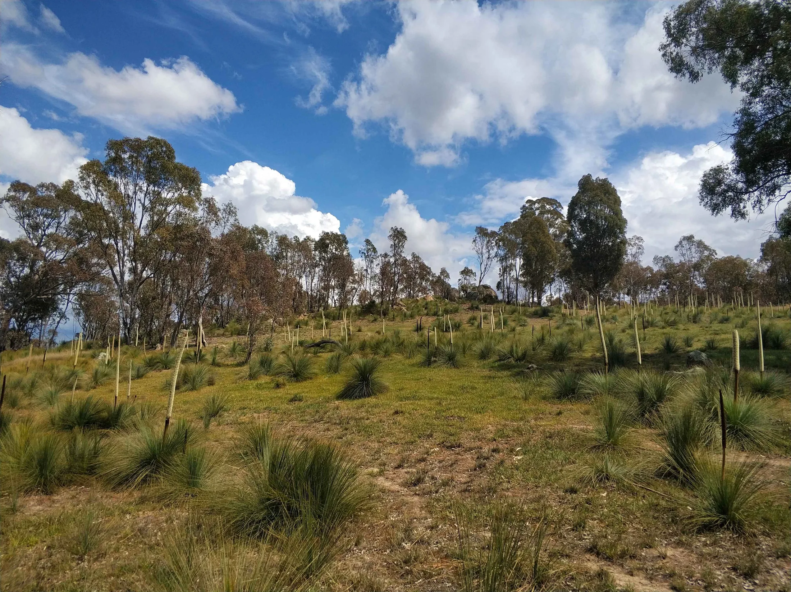

How I work
Someone owns your funding now. (All of it. Not just the easy grant.)
This page is the map. Keystone Impact Solutions finds the grants and awards you're eligible for, writes the ones worth chasing, and, when you're ready, owns the whole funding pipeline for conservation, environment and sustainability organisations, nonprofit or for-profit, based in Australia and working wherever you are. Three depths, one job. Here's which is which.
Book my discovery call(opens in new tab)Chasing funding was never anyone's job. So I made it mine. (The whole job, not the odd application.)
It always got bolted onto a role that was already full, so it lost to whatever was on fire that day. Which is most days. My fix isn't to write you one clever application and disappear. It's to own the whole pipeline, so the finding, the writing and the follow-through stop depending on whoever happens to have a spare hour.
And it's strategy, not execution for hire. I find the funding and recognition your mission is eligible for, I write what's worth winning, and I make sure it stops slipping past. Everything below is just how deep you want that to go.
Which one's for you?
Everyone I work with sits somewhere on the same ladder. Some want eyes on what they're eligible for. Some have a specific opportunity worth chasing and want it written to win. Some want to hand the whole strategy over. Start where you are, move up when you're ready. Here's the finding layer first.
Grant Scout
Just need to know what grants you're eligible for? A monthly report of live grants matched to your organisation, each one rated for how well you actually fit. You open one email and decide what's worth chasing.
See grant services →Keystone Scout
Want both landscapes watched as one? Your grants and your awards in a single monthly view, with the links between them called out, so a win on one side sets up the next. The integrated pick.
See Keystone Scout →Award Scout
Know you should be entering awards but not which ones? Award Scout maps the awards you're a real fit for and rates each for how strong your case is, so you stop guessing you're not good enough.
See award services →Ready for more than watching?
When a specific grant or award is worth going after and you want it written to win, that's the writing step: Grant Writing for grants, Award Story for award submissions. Quoted per piece, scoped first, and discounted if you're already a Scout client.
And when you'd rather hand the whole pipeline over, getting fundable, getting found, applications written, and funders kept warm long after the money lands, that's the Strategic Funding Partnership.
This is for you if...
- You're doing something real in conservation, environment or sustainability, whether that's a charity, a nonprofit, a social enterprise or a purpose-led business. Values are the filter, not your legal structure.
- Funding and recognition have never actually been anyone's job at your place, and there's no spare capacity to change that.
- You don't need someone to explain what a grant is, whether you've applied a dozen times or never once. You need someone to own the chase.
- You'd rather work with someone who knows the sector from the inside than a generalist you have to brief from scratch.
- You're based in Australia, or nowhere near it. I work wherever you are.
I already do this. Here's someone I do it for.
I'm a PhD ecologist who came up through the sector I now serve, so you don't start by explaining your science to me. I already run the integrated job for Tenkile Conservation Alliance, a conservation group working in Papua New Guinea: their grants and their awards, read as one picture instead of two separate jobs.
"When someone who has worked in the field of conservation then shifts into the administration side of things, it's gold. You get it Jess, so that makes it so much easier for us."Jean Thomas, Tenkile Conservation Alliance
Before you pick a path
How do nonprofits get funding?
Through a mix: grants from government, philanthropic trusts and corporate funders; awards and recognition that open doors to bigger money; donations and philanthropy; and earned income from their own activities. Most small organisations lean hardest on grants, because that's where the larger sums sit, but the ones who do it well run more than one stream and keep them all moving. Keystone Impact Solutions works the grant and award side: finding what you're eligible for, writing the applications worth winning, and keeping funder relationships warm so the money keeps coming rather than arriving once and going quiet.
How do I know which of your services I need?
It comes down to how much you want to hand over. If you only want to know what you're eligible for, a Scout is enough: Grant Scout for grants, the awards line for awards, or Keystone Scout for both watched together. If a specific opportunity is worth chasing and you want it written to win, that's the per-piece writing. And if you want one person owning the whole pipeline, from getting fundable through to stewardship, that's the Strategic Funding Partnership. If you're still not sure, that's exactly what the discovery call sorts out, and there's no cost to have it.
Can I start small and move up later, or do I have to commit to a retainer?
You can start small. The Scout services are month to month with no lock-in, so plenty of people begin there, get a feel for what's out there, and move up to writing or full ownership when the timing and the budget are right. Nothing here asks you to jump straight to the deepest commitment. The one exception is the Strategic Funding Partnership, which runs on a longer footing, because building a fundable case and a working pipeline takes a year's rhythm, not a month. Start where you can, deepen when it makes sense.
Do you guarantee we'll get funded or win an award?
No, and anyone who does is selling you something I won't. Funding and award decisions sit with independent assessors and judges, so no honest person can promise the outcome. What I can promise is that I only point you at opportunities you're genuinely eligible and competitive for, I write to what the funder or panel is actually scoring, and I pressure-test your claims before they go in. That's how you move the odds. It's rigour, not a guarantee.
Do you only do grants, or awards and philanthropy as well?
Grants, awards and the funder relationships behind both. I find and write grants, I map and write awards, and through the Strategic Funding Partnership I run the whole funding pipeline, including stewardship and reporting. Funding strategy is the core of what I do, and it's what this whole site is about. If you also want some of the delivery around it handled, I'm building a team to take that on, so ask on a call and I'll tell you what we can cover.
What actually happens on a discovery call?
You talk, I ask questions, and we work out what you actually need. I won't launch into a sales pitch, and if there's something worth pitching you, I'll ask before I do. I want to understand what you're doing, where funding and recognition are slipping, and which of the paths on this page fits, if any. You'll leave knowing whether we're a fit and what starting would look like, and if I don't think I'm the right person, I'll say so and point you somewhere better. The call is free, and there's no obligation on the other side of it.
Not sure which path is yours? That's what the call's for.
Bring what you're doing and what's slipping. We'll work out whether you need eyes on the pipeline, a specific piece written, or the whole thing owned. And if none of it's a fit, I'll tell you that too.
Book my discovery call(opens in new tab)